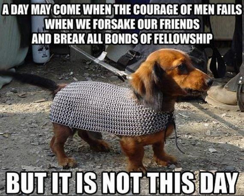

Dev Bootcamp: Guided Pair Session & Peer Sessions
The Good and The Bad
The good has to begin because I really love learning especially from others when I am just beginning a new field I have never touched before. In both occasions whether in GPS (Guided Pair Session) and peer-pairing, all taught me one important lesson. You need collaboration. You need it, you need it, you need it. Whether you are a surgeon, you need a team of nurses, an anesthesiologist, and a surgical technician in one surgical room to perform an operation. Well in the coding world, it is pretty deceitful because it seems like a 1 man job. Nope, I can guarantee you that it is not. I don't know how many times I have been saved by my classmates and my instructor from my silly bugged codes that I make all the time. There was a "rubber ducky" method where you would talk to a rubber ducky about how you will go about coding. Well, thank god, I have people around me that pick up my slack and to motivate me to try harder.
With that being said, now it is time to discuss the bad. I am the type to not want to disappoint others or to slow others down. I am new to the coding world. I do things at my own pace, which is pretty damn slow. And at times when it asked me if I paired up with anyone from the challenge, I would try it on my own first before I try collaborating. Sometimes, I would feel like I am behind in my curriculum because I am still reviewing really hard on my fundamentals and I am not yet ready to tackle real life challenges with another partner. I feel like I would be a hinder to completing the challenge. I am sorry. I am that type of person. If I know that I am not ready, I will not do things blindly, especially pretend that I know something and let my partner do all the work. If I were to jump at it, I would want it to be 50/50. GPS and peer-pairing is really intimidating in my opinion. I usually am very confident but in these cases, I have to be more realistic and admit I don't know something and prepare myself for when the time of battle comes.
